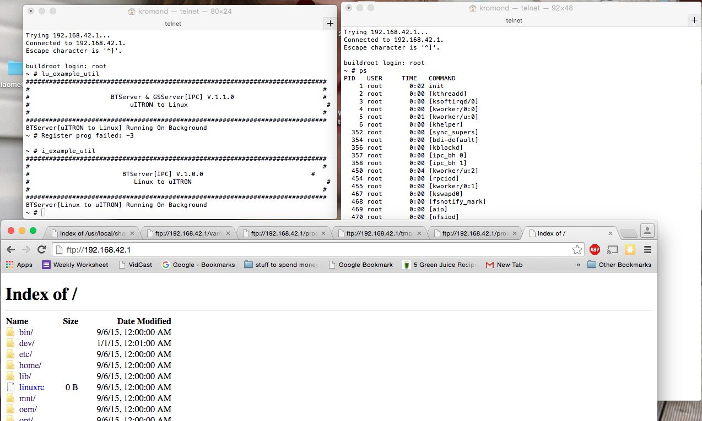
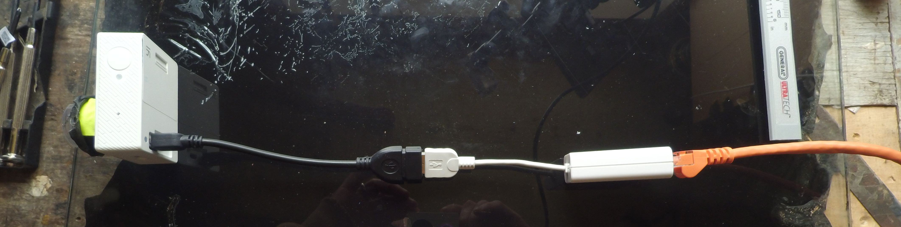

CameraControl_RTOS-ambsh
I have spent a bit of time looking into what sort of software control is possible. These cameras are similar to gopro. There are a couple of well traveled resources for this kind of activity, like dashcamtalk and some relevant gopro sources like: this interesting slideshow referencing this evil wombat github. I’ve also spent some time browsing this KonradIT gopro collectioon

There seems to be two os’s running simultaniously. One is linux busybox. This provides wifi and a few other services. The other os is a rtos and this controls the camera and image processing
The basics to getting console control for linux looks like this:
add an empty file to the root of the sd card with this name:
enable_info_display.script
This exposes the linux os to telnet at this addr: “192.168.42.1”, and will show the linux filesystem and many linux commands. It’s pretty amazing to interact with linux when it’s driving these kind of tiny devices.
The rtos is more opaque. There is a small level of control on boot, as seen above, when files with certain names are found at the root of the sd card, things happen. firmware.bin is one example. a file with this name will try to install firmware update to the camera. another is autoexec.ash
RTOS commands found in the autoexec.ash are executed on boot up by the rtos. All valid commands found there will be run, including a valid call to the linux os: lu_util exec. Some key notes on this: a newline is required at the end of the file, unix formated. Possible at the start as well. Also some time is requried to execute some commands and the ‘sleep’ function is often employed to space out function calls
‘lu_util exec’ is used in these scripts to send commands from rtos to linux for execution. As of yet, a similar command from linux to the rtos does not seem to be elaborated anywhere, but camera commands can be sent to port 7878. Here are some python examples sending json strings to this port
It’s also possible to get ftp access to the linux filesystem. Make a shell script that looks like this inside:
|
|
name it ftp.sh, put it at the root of the sd card and call lu_util exec on it from an autoexec.ash
|
|
I’ve been mostly looking for a way to get wired control of either the linux shell or the ambsh shell and as of yet have been unsuccessful. I did some dissassembly to see if I can spot serial connection points. I am not super keen for that approach. I’d much prefer something that took advantage of the existing usb ports. I’m currently investigating a ethernet to usb connector.

It doesnt seem to be recognized. I will keep digging but finding the linux filesystem read only, I am not sure I can do much with this…